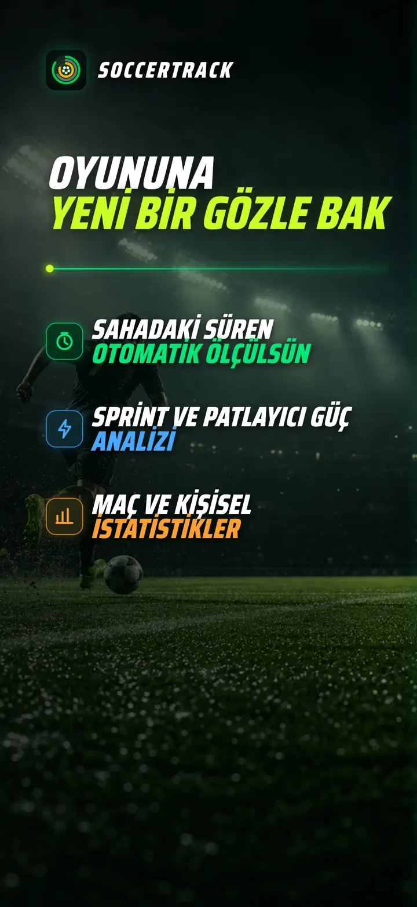
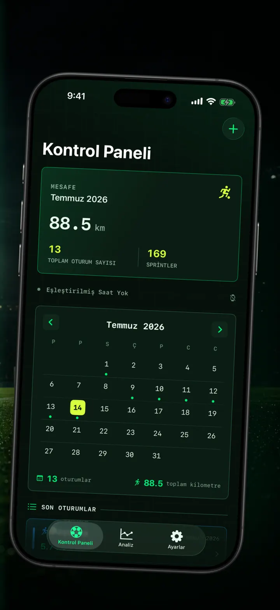
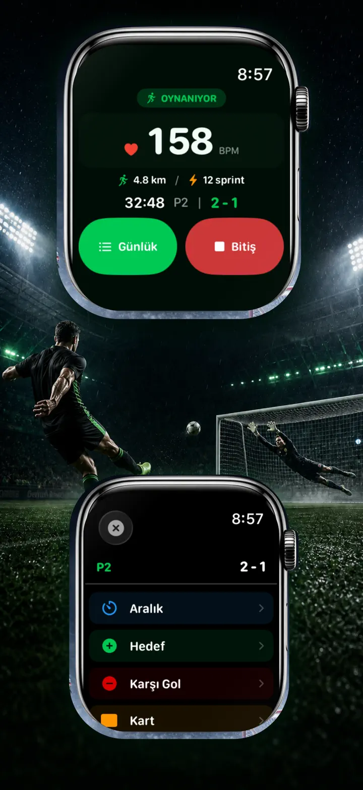
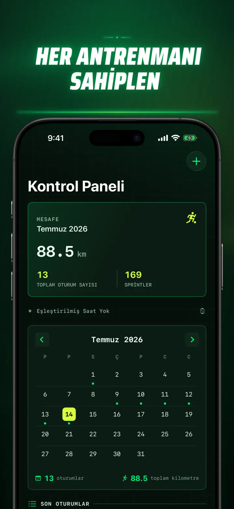
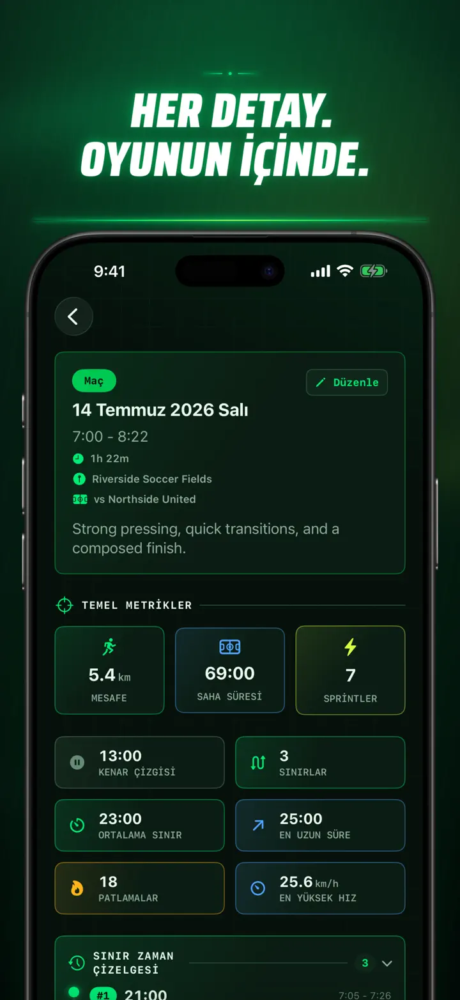
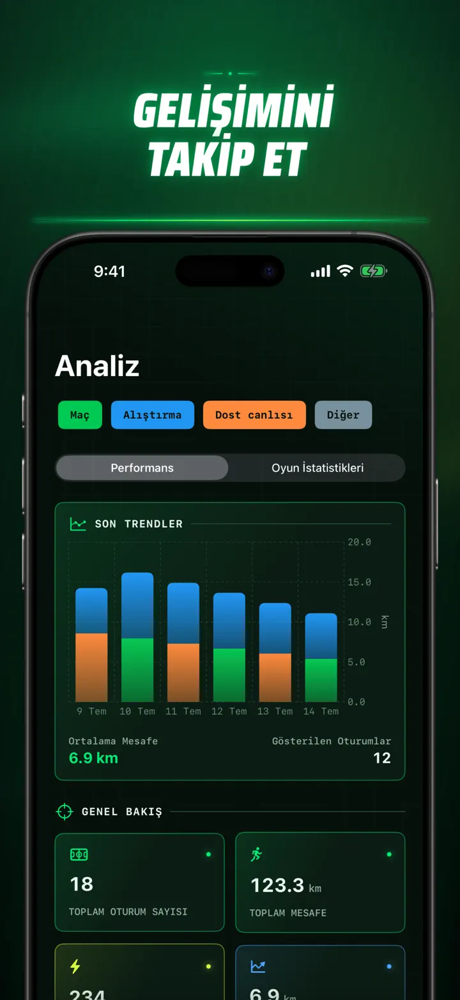
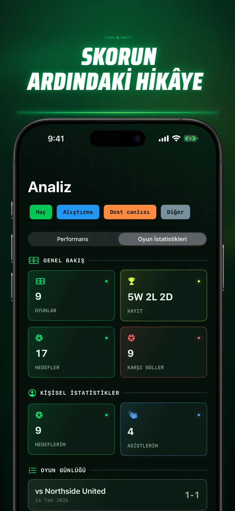
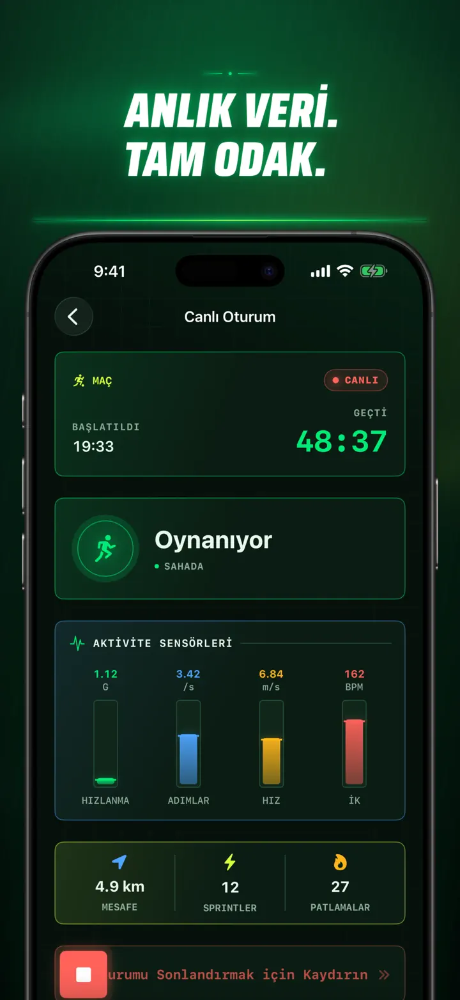
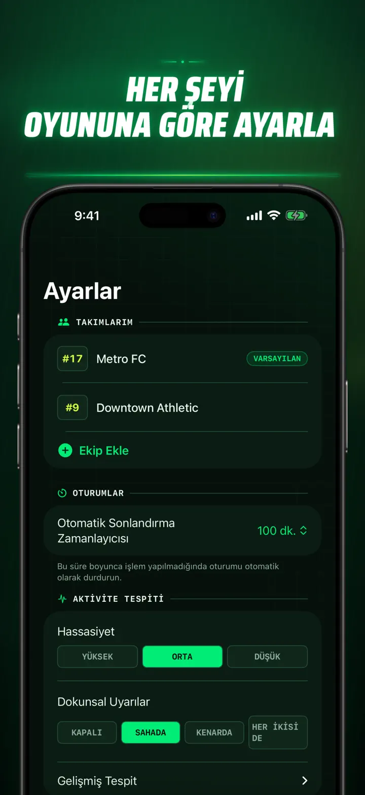
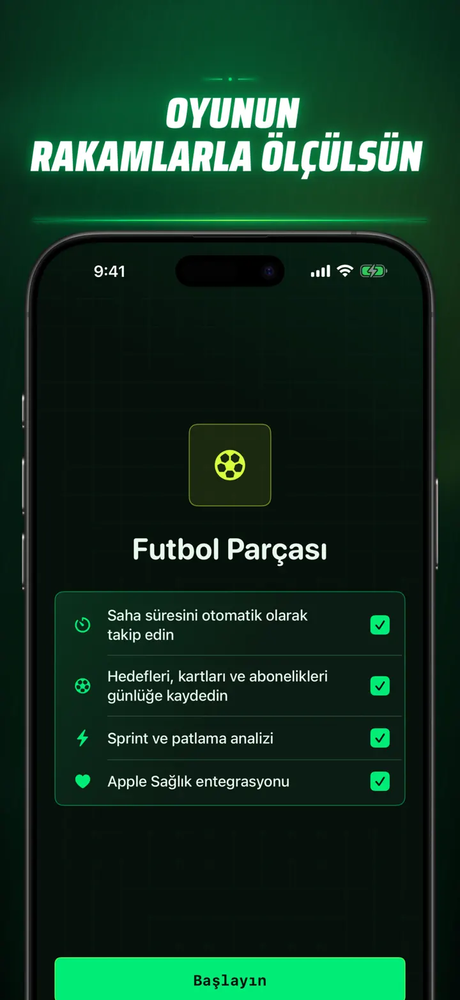

Soccer Time Track
Futbol: süre ve maç analizi
Bir antrenman başlat ve oyna. Apple Watch saha ve yedek kulübesi süresini otomatik ayırır; canlı verileri, sprintleri, olayları ve trendleri kaydeder.
App Store’dan indir
Uygulama hakkında
Maçına farklı bir gözle bak.
Soccer Time Track, Apple Watch'u maç sonucundan fazlasını anlamak isteyen oyuncular için bir maç yardımcısına dönüştürür. Bileğinden başlat, oyuna odaklan, ardından performansının ayrıntılı görünümünü iPhone'da incele.
OTOMATİK SAHA SÜRESİ
Gerçekten ne zaman oyunda olduğunu gör. Hareket, antrenman ve konum sinyalleri oyun, düşük aktivite ve yedek kulübesi sürelerini ayırt etmeye yardımcı olur. Şunları elde edersin:
- Saha ve yedek kulübesi süresi
- Oyun bölümleri ve net bir zaman çizelgesi
- Antrenmanın nasıl geçtiğine dair ayrıntılı döküm
MAÇ GÜNÜ BİLEĞİNDE
Maç, Antrenman, Hazırlık Maçı veya Diğer seçeneğini belirle. Oyun sırasında kaydet:
- Atılan ve yenilen goller
- Kendi gollerin ve asistlerin
- Sarı ve kırmızı kartlar
- Oyuncu ve devre değişiklikleri
OYUNUN, ÖLÇÜLDÜ
Dakikaların ötesine geçen veriler:
- Mesafe
- Ortalama ve en yüksek hız
- Sprintler ve yüksek yoğunluklu hızlanmalar
- Nabız ve aktif kaloriler
- Kadans ve ivme
CANLI VERİ, TAM ODAK
Eşlenmiş bir iPhone, Apple Watch antrenmanı sürdürürken canlı ölçümleri gösterebilir. Sen maça odaklanırsın, verilerin arka planda şekillenir.
GELİŞİMİNİ GÖR
Maçları, antrenmanları, hazırlık maçlarını ve diğer oturumları tek geçmişte topla. Trendleri ve kişisel rekorları keşfet, performansları karşılaştır; her sonucun hikâyesi için takım, forma numarası, rakip, konum ve not ekle.
Verilerine başka yerde mi ihtiyacın var? Oturumları, oyun bölümlerini ve maç olaylarını CSV veya JSON olarak dışa aktar.
APPLE WATCH VE APPLE HEALTH İÇİN
Soccer Time Track, izninle analiz oluşturmak ve tamamlanan futbol antrenmanlarını Apple Health'e kaydetmek için antrenman, nabız, hareket ve konum verilerini kullanır. Otomatik takip için Apple Watch gerekir. iPhone'da elle de oturum ekleyebilirsin.
VERİLERİN, SENİN OYUNUN
Oturumların cihazlarında ve iCloud Eşzamanlama açıksa özel iCloud veritabanında kalır. Soccer Time Track hesap gerektirmez, reklam göstermez ve üçüncü taraf analitiği kullanmaz.
Ne kadar oynadığını tahmin etmeyi bırak. Süreni nasıl kullandığını gör.
Gizlilik Politikası: https://masawata.net/SoccerTimeTrack/privacy-policy.html Hizmet Koşulları: https://www.apple.com/legal/internet-services/itunes/dev/stdeula/
Ekran görüntüleri









Soccer Time Track
Bir antrenman başlat ve oyna. Apple Watch saha ve yedek kulübesi süresini otomatik ayırır; canlı verileri, sprintleri, olayları ve trendleri kaydeder.
App Store’dan indir